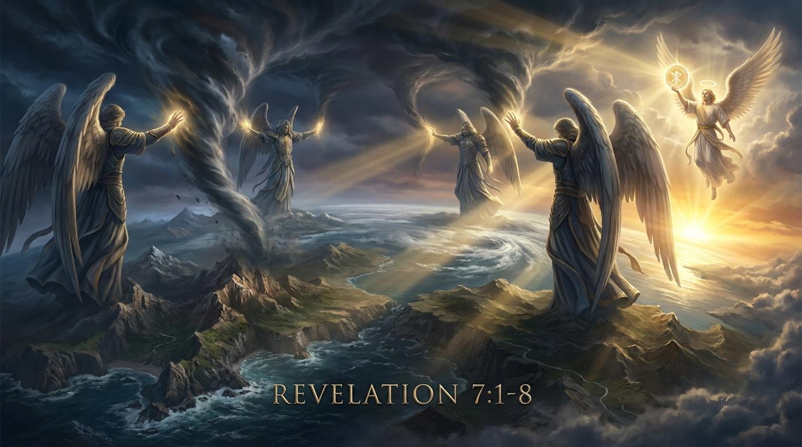

風暴前的神聖印記：在動盪世界中看見屬天保障
親愛的弟兄姊妹，當你打開新聞，看到戰爭、經濟崩盤，你的心裡是否曾浮現過一個問題：「誰能站立得住呢？」
「地與海並樹木，你們不可傷害，等我們印了我們神眾僕人的額。」
弟兄姊妹，當你信主的那一刻，聖靈就像這神聖的印記，深深地印在你的額上！世界可能會奪走我們的財物，但世界無法奪走你的歸屬。

「地與海並樹木，你們不可傷害，等我們印了我們神眾僕人的額。」（啟示錄 7:3）
主啊，我們感謝祢。當世界的風暴四起，當動盪與不安如同四方的風即將席捲大地時，祢的恩典卻先一步臨到。謝謝祢將聖靈的印記安放在我們額上，宣告我們是屬祢的重價珍寶。求祢幫助我們在患難中看見祢掌權的雙手，在逼迫與誘惑中堅守我們的身分，不畏懼眼前的風暴，因為知道沒有任何事物能使我們與祢的愛隔絕。奉主耶穌基督得勝的名求，阿們。
執掌(krateō)：用力抓住。印(sphragis)：所有權、保護、認證。
啟示文學（144,000的象徵）、預言、書信的複合體。
啟7章位於第六印與第七印之間的「插入段落」，回應了「誰能站立得住」的呼喊。第一世紀多米田時期的帝王崇拜，讓受印記成為了超越羅馬帝國的最終認證。
「此後，我看見四位天使站在地的四角，執掌地上四方的風...」
關鍵字：執掌(krateō)。世界充滿風浪，但上帝握有暫停權。這不是偶然，這是護理。
「地與海並樹木，你們不可傷害，等我們印了我們神眾僕人的額。」
關鍵字：印(sphragis)。這是所有權的宣告，如同國王的玉璽，任何勢力不可輕易侵犯。
「我聽見以色列人各支派中受印的數目有十四萬四千。」
12x12x1000的象徵。這是一場完美軍隊的點名，代表教會全體，一個都不會失落。
親愛的弟兄姊妹，當你打開新聞，看到戰爭、經濟崩盤，你的心裡是否曾浮現過一個問題：「誰能站立得住呢？」
「地與海並樹木，你們不可傷害，等我們印了我們神眾僕人的額。」
弟兄姊妹，當你信主的那一刻，聖靈就像這神聖的印記，深深地印在你的額上！世界可能會奪走我們的財物，但世界無法奪走你的歸屬。
網路資料可能出錯，請小心查證、謹慎使用。